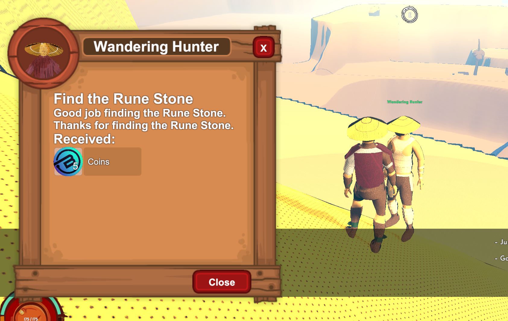
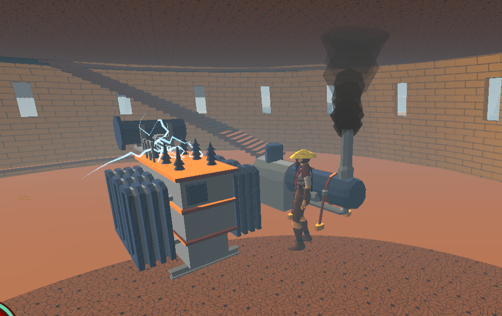
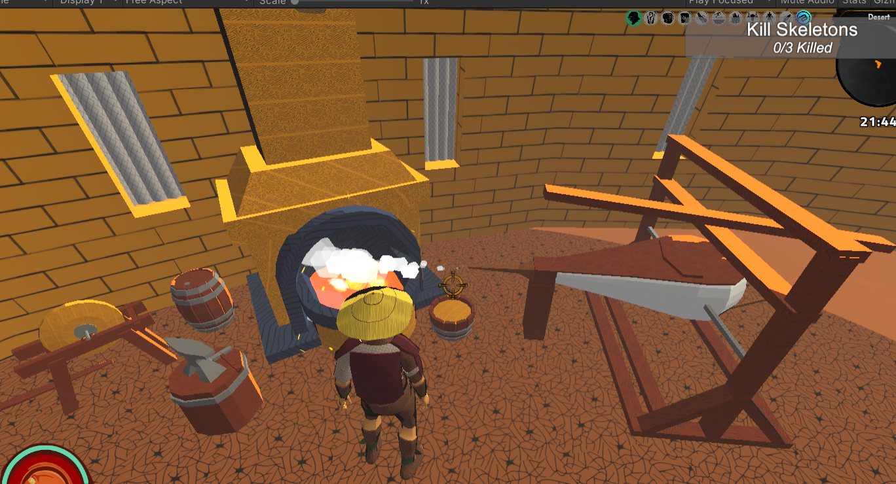
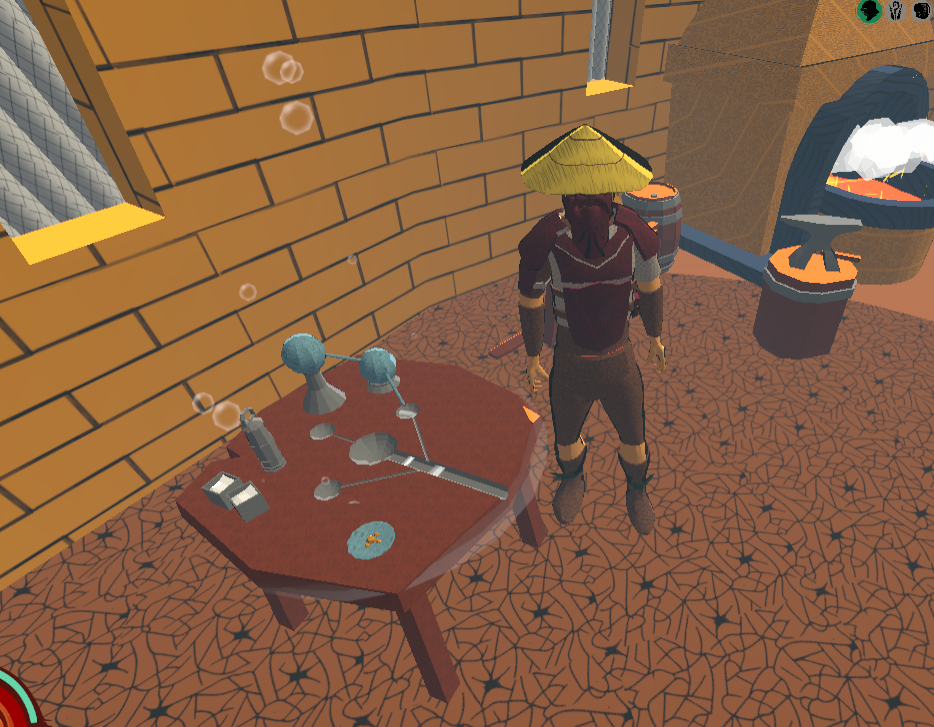
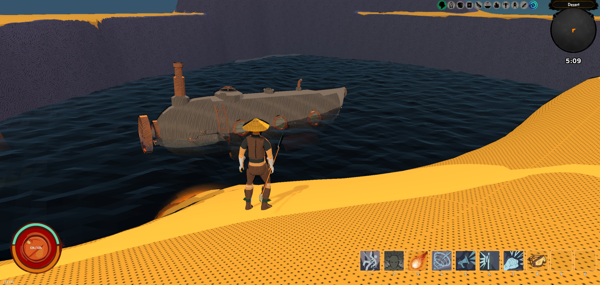

Okurková sezóna
Léto. Období extrémních teplot, které jsou spíš vyčerpávající než příjemné. Měl jsem občas pocit, že se hranice mezi realitou a hrou rozmazaly a já skončil v těch samých pouštích, které už měsíce vytvářím v Unity. Práce byla pomalejší a méně efektivní, protože vedro člověka totálně vysává. Na druhou stranu jsem během těch dvou týdnů dostal i spoustu nových nápadů.
Questing a dialogový overhaul
Jednou z největších změn je implementace nového quest a dialog systému. Obě řešení jsou placené assety z Unity Storu od Pixel Crushers, oba mají výborné hodnocení a používají se i v známějších hrách. Díky letním slevám se mi je podařilo koupit. Pomohlo i to, že mají podporu pro RPG Builder od Blink Studia, který už stejně používám.
Bál jsem se implementace, protože jsou to dost script-heavy systémy a pracují i s databází, ale první nasazení proběhlo překvapivě hladce. Některé questy a dialogy už se podařilo otestovat, ale nechci to uspěchat a zaneřádit databázi. Je kolem toho ještě hodně videí a manuálů ke studiu.
Quest Machine,
Dialogue Systems for Unity
Proč to bylo potřeba? Starý systém v RPG Builderu byl příliš jednoduchý. Dřív jsme měli v zásadě jen quest typu „zabij něco“ nebo „dones věc“. Teď už možnosti skoro nekončí. Můžu dělat dialogové questy, eskorty, hledání NPC, harvest questy a další věci. Dříve navíc bylo potřeba velkou část questů scriptovat ručně, kdežto teď je můžu skládat ze sad vlastností a některé dokonce generovat runtime. Můžu tedy vytvořit třeba lovce odměn, který ti bude donekonečna generovat bounty úkoly.
Stejně silný je i dialog systém. Je přímo propojený s Quest Machine, takže můžu dělat mnohem komplexnější rozhovory vázané na čas, frakci nebo další podmínky. UI potřebuje ještě velký rework, takže to zatím ber spíš jako funkční základ.

Nábytek
Do domů jsem přidal i nový nábytek. Část jsem modeloval v Blenderu a část pochází z 3D packů od Synty Studios, které jsem koupil už dřív. Došlo mi, že nemá smysl modelovat úplně všechno od nuly, zvlášť když se Synty styl docela dobře potkává s tím mým.
Většinu modelů jsem stejně musel upravit v Blenderu, aby seděly RGB masking stylu hry. Potom jsem ještě přidal i pár VFX efektů v Unity z Polygon Stylized SFX packu, který se k tomu vizuálu hodí.
Modelů budu potřebovat ještě spoustu, ale teď jsem se soustředil hlavně na craft stanice a interaktivní objekty. Do budoucna chci namodelovat i plné farmaření, včetně květináčů, polí, pump a dalšího vybavení.
Synty Studios,
Polygon Particle FX
Tady jsou některé craft stanice:



A pár dalších modelů:
